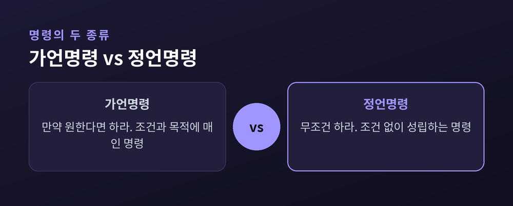
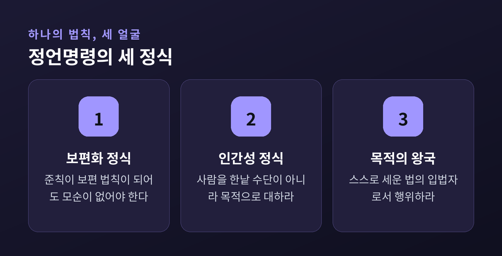
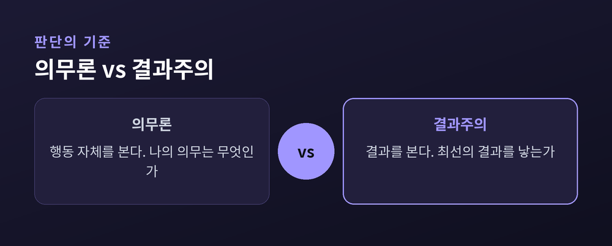

너의 행동이 보편 법칙이 되게 하라
이번 글에서는 칸트의 정언명령을 정리해 보겠습니다.
"내 행동이 모든 사람의 법칙이 되어도 괜찮은가." 짧지만 무거운 물음입니다.
칸트가 남긴 이 한 줄은 지금도 윤리 교과서의 첫머리에 놓입니다.
이 문장이 왜 근대 윤리학의 중심이 되었는지, 어렵지 않게 함께 살펴보겠습니다.
먼저 명령의 두 종류를 나눠 봅니다.
가언명령은 조건이 붙습니다. "합격하고 싶다면 공부하라." 목적이 사라지면 명령도 사라집니다.
정언명령은 다릅니다. 조건 없이 그냥 "~하라"고 말합니다. 결과나 이득에 대한 언급이 모두 지워져 있습니다.
우리가 무엇을 바라서가 아니라, 이성적 존재이기 때문에 따라야 하는 명령입니다.
예전에는 도덕을 이득의 문제로 다루기도 했습니다. 지금 칸트가 세우려는 것은 이득과 무관한 법칙입니다.
칸트는 도덕법칙이 이 정언적 형태여야 한다고 보았습니다. 욕구에 기대는 규칙은 사람마다 흔들리고, 그래서 보편적일 수 없기 때문입니다.

칸트는 정언명령을 세 정식으로 풀어 설명합니다.
첫째, 보편화 정식입니다. "네 준칙이 보편 법칙이 되게 하라." 내 행동원칙이 모두에게 적용돼도 모순이 없어야 합니다.
거짓말을 예로 들어 봅니다. 모두가 편할 때마다 거짓말을 한다면 아무도 말을 믿지 않습니다. 그러면 거짓말이라는 행위 자체가 성립하지 못합니다. 준칙이 스스로 무너지는 셈입니다. 그래서 거짓말은 보편화될 수 없습니다.
거짓 약속도 마찬가지입니다. 모두가 지킬 뜻 없이 약속한다면 약속이라는 제도 자체가 사라집니다.
둘째, 인간성 정식입니다. 사람을 결코 한낱 수단으로만 대하지 말라는 것입니다. 인간은 그 자체로 목적입니다. 사기와 착취가 왜 그른지를 이 정식이 설명합니다. 근대 인권과 존엄 개념의 뿌리이기도 합니다.
셋째, 목적의 왕국 정식입니다. 도덕법칙은 밖에서 강요된 것이 아닙니다. 이성적 존재가 스스로 세운 법입니다. 내가 지키는 규칙의 입법자가 바로 나라는 뜻입니다.
세 정식은 서로 다른 각도에서 같은 법칙을 비춥니다.

칸트의 윤리는 흔히 의무론이라 불립니다.
공리주의는 결과를 봅니다. 최대 다수의 최대 행복이 기준입니다. "어떤 행동이 가장 좋은 결과를 낳는가"를 묻습니다.
의무론은 행동 자체를 봅니다. "나의 의무는 무엇인가"를 묻습니다. 결과가 좋든 나쁘든 옳은 것은 옳습니다.
도둑질을 두고도 답이 갈립니다. 공리주의는 사회 전체의 불안을 키우니 나쁘다고 봅니다. 칸트는 재산권을 침해하니 그 자체로 나쁘다고 봅니다.
그래서 두 입장은 자주 갈립니다.
다만 한계도 분명합니다. 살인자가 피해자의 위치를 물어도 거짓말을 금한다는 결론은 많은 사람의 직관과 부딪칩니다. 규칙이 결과를 외면할 때 경직된다는 비판입니다.
칸트를 옹호하는 쪽에서는, 거짓말은 오히려 피해자의 자율성을 지키기 위한 것이라고 답하기도 합니다. 위험에 빠뜨린 사람은 거짓말한 이가 아니라 살인자라는 것입니다.
준칙을 어떻게 적으냐에 따라 결론이 흔들린다는 지적도 있습니다. 그만큼 정언명령은 완결된 답이라기보다 계속 되묻게 하는 물음에 가깝습니다.

정리하면 이렇습니다.
정언명령은 내 행동을 나만의 예외로 두지 말라는 요구입니다. 결과가 아니라 이유를 묻고, 사람을 도구가 아니라 목적으로 보라는 태도입니다.
새치기, 표절, 세금 탈루처럼 "나만 예외로"라는 마음은 보편화하는 순간 무너집니다. 그 점을 확인해 주는 것만으로도 정언명령은 오늘날 쓸모가 있습니다.
"너의 행동이 보편 법칙이 되게 하라."
내 선택이 모두의 규칙이 되어도 부끄럽지 않은가. 오늘 하루, 그 물음 하나를 품어 보시면 좋겠습니다.